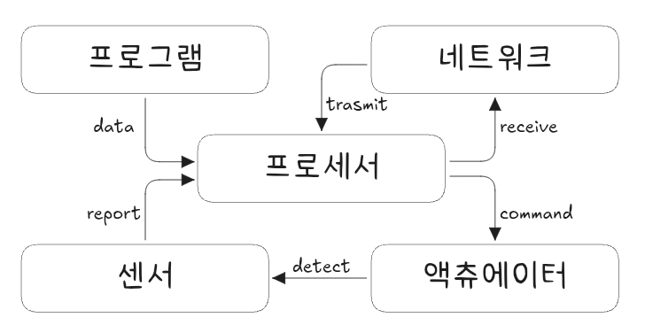

공장 자동화 기술
공장자동화, 자동화 유형, 자동화 변천, FMS
공장자동화
공장자동화(Factory Automation)란 생산공정의 작업을 기계, 전자제어, 정보기술 등을 활용하여 인간의 개입 없이 자동으로 수행되도록 하는 시스템 또는 기술을 의미한다. 센서 → 컨트롤러 → 액추에이터로 이어지는 피드백 제어 루프를 기반으로 HMI 및 SCADA를 통한 시각화와 운영관리, 로봇/모션 제어로 실제 작업을 자동화 한다. 이 모든 ㅇ소는 통신 네트워크로 연결된다. 자동화의 목적은 생산성 향상, 품질 안정화, 비용 절감, 안전 확보, 납기 단축 등이다.
공장자동화는 다음과 같이 분류할 수 있다.
| 구분 | 설명 | 예시 |
|---|---|---|
| 기초자동화 | 개별 장비 단위의 자동화 | CNC, 로봇, 자동포장기 |
| 부분자동화 | 일부 공정 또는 라인의 자동화 | SMT라인, 조립 셀, 반송시스템 |
| 전면자동화 | 전체 생산라인의 자동화 | 완전 무인화 생산라인 |
| 지능형자동화 | 센서, IoT, AI 등을 이용한 자율제어 | 스마트팩토리, 디지털 트윈 기반 생산 |
공장자동화는 하드웨어, 제어 시스템 ,정보기술, 데이터 수집, 통신 인프라 등으로 구성된다.
| 구성요소 | 설명 |
|---|---|
| 하드웨어 | 자동화 설비, 로봇, 컨베이어, 센서, 제어기기 |
| 제어시스템 | PLC, DCS, SCADA, HMI 등 |
| 정보기술 | MES, ERP, WMS 등 생산정보시스템 |
| 데이터 수집 | 센서, RFID, 비전시스템, IoT 디바이스 |
| 통신 인프라 | 산업용 네트워크 (Ethernet/IP, Profinet 등) |
공장자동화 시 다음과 같은 이점이 있다.
| 구분 | 내용 |
|---|---|
| 생산성 향상 | 반복 작업의 고속/정밀 수행으로 인한 산출량 증가 |
| 품질 안정화 | 인간 오류 감소 및 일관된 작업 수행 |
| 원가 절감 | 인건비 절감, 자재 낭비 최소화 |
| 납기 단축 | 자동화된 흐름으로 리드타임 단축 |
| 산업안전 향상 | 유해작업의 대체, 인간-기계 분리 가능 |
공장자동화는 다음과 같은 수준으로 구분된다.
| 수준 | 정의 | 특징 |
|---|---|---|
| Level 1 | 장비 자동화 | 수동작업 일부 자동화, 독립적 운영 |
| Level 2 | 셀/라인 자동화 | 작업 셀 혹은 생산라인 단위 자동화 |
| Level 3 | 공정 자동화 | 다공정 통합, 공정 간 연계 |
| Level 4 | 공장 자동화 | 전공정 및 정보 통합, MES/ERP 연계 |
| Level 5 | 스마트 공장 | AI, IoT 기반의 자율 운영 시스템 |
공장자동화의 대표적인 기술은 다음과 같다.
| 기술 | 설명 |
|---|---|
| PLC (Programmable Logic Controller) | 공정 제어를 위한 핵심 제어 장치 |
| SCADA (Supervisory Control and Data Acquisition) | 원격 모니터링 및 제어 시스템 |
| AGV/AMR | 무인 운반 차량을 통한 자재 자동 이동 |
| 산업용 로봇 | 용접, 조립, 페인팅 등 다기능 수행 장치 |
| 비전 시스템 | 카메라 및 인공지능을 통한 검사 자동화 |
| IoT/센서 | 실시간 데이터 수집 및 예지보전 기반 마련 |
공장자동화 도입 시 다음과 같은 사항을 고려해야 한다.
| 항목 | 내용 |
|---|---|
| 공정 적합성 분석 | 자동화 가능성 및 ROI 검토 |
| 표준화 및 모듈화 | 설비 및 부품의 표준화 필요 |
| 설비 인터페이스 | 기존 설비와의 통신 및 데이터 호환성 확보 |
| 보전체계 구축 | 예지보전(PdM), TPM 연계 운영 필수 |
| 인력 재배치 | 자동화로 인한 인적 자원 재설계 필요 |
공장자동화 관련하여 연계된 시스템은 다음과 같다.
| 시스템 | 역할 |
|---|---|
| MES (Manufacturing Execution System) | 생산 실행 관리 및 실시간 공정 모니터링 |
| ERP (Enterprise Resource Planning) | 자재, 인력, 생산계획 등 전사 자원 통합 |
| WMS (Warehouse Management System) | 창고 및 자재 입출고 자동화 |
| CMMS (Computerized Maintenance Management System) | 설비보전 이력 및 예지보전 관리 |
자동화 5대 요소
자동화 5대 요소는 감지기(센서), 액추에이터, 네트워크, 프로세서 및 프로그램이다.

- 감지기, 작업 수행을 위한 정보 수집
- 액츄에이터, 작업 수행
- 네트워크 기술, 설비 상호간 정보 교류
- 프로세서(제어신호 처리장치), 공정 절차에 따른 수행
- 프로그램(소프트웨어 기술), 공정 절차에 따른 수행
자동화 대상은 다음과 같다.
- 생산관리 - 공정관리, 품질관리, 자재관리, 원가관리, 노무관리
- 반복작업 - 가공물 운반, 자재 반입 및 반출 등
- 숙련작업 - 용접 작업, 각종 자동장치 및 조립 작업 등
자동화 유형
자동화 유형은 고정형 자동화, 프로그램 자동화, 그리고 유연 자동화가 있다.
- 고정형 자동화(Fixed automation)
- 성숙기 제품에 대해 표준화된 대량 생산 (소품종/저원가/대량생산)
- 노무비 절감, 생산 소요시간 단축
- 전용설비, 대형화로 초기 투자금액이 큼
- 공정 경로 및 조립 순서가 고정, 단순 반복작업 수행
- 가공(조립) 작업 순서가 설비 배치에 의해 고정
- 복잡한 많은 동작이 한 가지 설비로 통합, 조정
- 프로그램 자동화(Programmable automation)
- 프로그램 지시에 의해 다양한 작업을 수행 (산업로봇, NC 공작기계)
- 다양한 제품, 배치 소량 생산
- 작업순서 변경 가능한 성능 보유한 생산설비
- 유연형 자동화(Flexible automation)
- 다품종소량 생산 목적
- 프로그램 가능 자동화보다 더 맞춤화된 장비 사용, 장비 준비, 교체 시간이 짧아 제품을 여러 조합으로 생산
- 범용설비, 소규모 투자
- 단속 공정 장점인 탄력성과 라인 공정의 높은 생산성(CIM, FMS)등
- 기종 변경 시 대기시간없이 다양한 제품 생산 가능
- 시스템이 재프로그램밍되고 물리적 설정 변경에 다른 생산시간 낭비가 없음
고정형 자동화와 유연형 자동화를 비교하면 다음과 같다.
| 구분 | 고정형 자동화 시스템 | 유연형 자동화 시스템 |
|---|---|---|
| 설비 투자 규모 | 매우 큼 | 비교적 적은 편이지만, 기계화된 시스템에 비해선 큰 편임 |
| 생산품목 | 소품종 대량 생산에 적합 | 다품종 소량생산 가능 |
| 공정 유연성 | 가공 순서, 생산품목 변경 시 많은 비용 소요 | 프로그램에 의해 통제가 가능하며 생산조직의 유연성이 높음 |
| 생산 속도 | 단위 시간당 높은 생산량 | 상대적으로 낮음 |
| 적용 사례 | 자동 가공라인, 조립라인 | NC 기계, 로봇, CAD/CAM |
자동화 변천
자동화 변천 내용을 정리하면 다음과 같다.
| LCA1 | FA | FMS | CIM | Smart Factory |
|---|---|---|---|---|
| 간이 자동화 | 공장 자동화 | 유연생산시스템(생산 방식에 의한 자동화) | 컴퓨터 통합생산 시스템(공장자동화 + 정보 자동화) | 스마트 팩토리 (ICT 기반 자동화 공장) |
| 생산에 필요한 각종 생산설비를 보다 싸고, 보다 빠르게 제작 활용하는 것 | 수주에서 출하에 이르는 활동에 대해 적용 | 각종 자동화기기, 로봇, CAD/CAM, 자동창고 등 다양한 설비나 소프트웨어를 이용하여 유연한 생산체계를 구축한 시스템 | 설비 자동화와 생성된 생산 데이터의 정보화를 통합(자동화 - 설비, 창고 등, 정보화 - 계획, 운영 및 통제 데이터, MRP, MRP II, 표준 데이터 등), 다품종 소량생산 체제에 유연하게 대응 가능 | ICT와 기계 산업 융합을 통해 제조업 완전 자동 생산 체계를 구축하고모든 공정이 최적화되는 생산 현장 |
스마트 팩토리와 자동화 차이점은 다음과 같다.
| 구분 | 내용 | 생산체제 |
|---|---|---|
| 공장 자동화 | • 1세대 자동화: 전용 기기로 사용 • 2세대 자동화: 전용 기기 공정 중간에 로봇 연결, 전용 기기와 로봇이 각각 구동하여 작업자가 투입되어 함께 작업 및 전체를 관리 • 산업용 로봇을 전용 기기처럼 사용 |
대량생산 체제 |
| 스마트 팩토리 | • 3세대 로봇화 추구: 로봇 중심 자동화 추구 • 로봇을 사람이 하는 공정을 대체(협동 로봇) • 다양한 센서 활용, PC 환경과 동일한 인터페이스 환경 구축으로 연결성, 유연성, 지능성 확보 |
고객 맞춤형, 다품종소량 생산 |
자동화 도입 시 다음 사항을 유의해야 한다.
- 생산 전략은 기업 전략과 일관성유지
- 생산 관련 의사결정은 기업 전체 입장에서 경쟁력 제고 방향으로
- 도입 시스템에 대한 관리능력 보유
- 자동화 투자 여부 결정 시 비용 절감 외 시장 적응성, 고객 서비스 등에 대한 평가 중시
FMS
FMS(Flexible Manufacturing System, 유연 제조 시스템)은 다양한 제품을 자동으로 생산할 수 있는 제조 시스템으로, 생산 라인이 유연하게 재구성되어 다품종 소량 생산이 가능하다. 변화하는 시장 수요에 신속하게 대응할 수 있도록 설계된 시스템이다.
FMS의 주요 특징은 다음과 같다.
- 유연성(Flexibility)
- 제품의 종류와 사양이 달라져도 기계 및 설비의 변경 없이 생산이 가능하다.
- 다양한 제품을 동시에 또는 순차적으로 생산할 수 있다.
- 제품의 종류와 사양이 달라져도 기계 및 설비의 변경 없이 생산이 가능하다.
- 자동화(Automation)
- CNC(Computer Numerical Control) 기계, 로봇, AGV(Automated Guided Vehicle, 무인 운반차) 등으로 구성되어 있다.
- 작업 변경이나 설비 조정이 자동으로 이루어진다.
- CNC(Computer Numerical Control) 기계, 로봇, AGV(Automated Guided Vehicle, 무인 운반차) 등으로 구성되어 있다.
- 통합 시스템(Integration)
- 생산 계획, 재고 관리, 품질 검사 등이 통합된 컴퓨터 시스템(CIM, Computer Integrated Manufacturing)으로 제어된다.
- 생산 계획, 재고 관리, 품질 검사 등이 통합된 컴퓨터 시스템(CIM, Computer Integrated Manufacturing)으로 제어된다.
- 효율성 및 생산성 향상
- 비용 절감, 생산 시간 단축 및 낮은 불량률을 실현한다.
- 비가동 시간 최소화 및 설비 활용률 극대화.
- 비용 절감, 생산 시간 단축 및 낮은 불량률을 실현한다.

FMS 구성 요소는 다음과 같다.
- 가공 기계(Machine Tools)
- CNC 밀링, 선반, 드릴링 등 다양한 가공 장비로 구성
- CNC 밀링, 선반, 드릴링 등 다양한 가공 장비로 구성
- 로봇 및 운반 시스템
- 로봇과 AGV가 원자재 및 제품을 자동으로 이송
- 로봇과 AGV가 원자재 및 제품을 자동으로 이송
- 소프트웨어 시스템
- 생산 스케줄링, 품질 관리, 공정 모니터링을 담당
- 생산 스케줄링, 품질 관리, 공정 모니터링을 담당
- 자동 보관 및 출고 시스템(AS/RS)
- 재료 및 완성품을 자동으로 저장하고 필요한 시점에 출고
| 구분 | 장점 | 단점 및 한계 |
|---|---|---|
| 생산성 및 유연성 | 다양한 제품을 신속하게 생산 가능 | 시스템 복잡성으로 인한 관리 및 유지보수 어려움 |
| 비용 | 생산 라인 재구성이 불필요해 추가 비용 감소 | 초기 투자 비용이 높음 |
| 재고 관리 | 필요 시 필요한 만큼만 생산해 낮은 재고 수준 유지 | 시스템 고장 시 생산 차질 발생 |
| 품질 | 자동화 및 정밀 제어를 통해 불량률 감소 | |
| 생산 시간 | 빠른 공정 전환으로 리드 타임 단축 |
FMS는 유연성과 생산성 향상, 재고 감소 및 품질 개선 등의 이점을 제공하지만, 초기 투자비, 복잡성 및 유지보수 문제와 같은 단점도 존재한다. 기업의 생산 전략과 재정 상태에 맞추어 도입 여부를 신중히 결정해야 한다.
FMS는 다양한 산업분야에서 활용된다.
- 자동차 산업: 다양한 모델 및 사양의 자동차 부품 생산
- 전자 산업: 반도체 및 전자 제품의 유연한 생산 공정
- 항공 산업: 정밀하고 복잡한 항공기 부품 가공
- 기계 산업: 다품종 소량 생산이 필요한 산업군
FMS는 변화하는 시장 요구에 신속하게 대응할 수 있는 제조 시스템으로, 효율성과 생산성을 높이는 핵심 기술이다. 4차 산업혁명 시대에 스마트 팩토리와 결합되어 지능형 제조 시스템으로 발전하고 있다.
DNC
DNC(Direct Numerical Control)는 NC(수치제어, Numeric Control) 기술이 발전한 형태이다. NC 기술은 공작기계에 적용해서 기계가공을 자동으로 행하는 것으로 수치제어가공은 NC공작기계가 중심이 된다. NC공작기계는 정보처리 정도에 따라 다음과 같이 분류할 수 있다.

- 일반 NC공작기계(Conventional NC Machine)
- 머시닝 센터(Machine Center)
- 컴퓨터 수치제어(CNC, Computer Numerical Control)
- 직접 수치제어(DNC, Direct Numerical Control)
DNC 기계군은 여러 대 NC 기계를 컴퓨터에 연결하여 외부 기억장치에 저장된 NC용 가공지령정보를 필요에 따라 컴퓨터를 통해 전달받아 공작기계를 움직여 작업을 수행한다.
CNC는 각 기계가 독립적인 프로그램을 가지고 있어 개별적으로 작동한다. 즉 한 번에 작업 하나만을 처리할 수 있다. 이에 반해 DNC는 여러 기계가 네트워크로 연결되어 중앙 서버로부터 명령을 받아 작업을 수행한다. 이로 인해 DNC에서는 한 번에 여러 작업을 동시에 진행할 수 있어 생산성이 향상된다. 또한 DNC는 중앙 서버에서 데이터를 관리하기 때문에 프로그램 업데이트나 변경 사항이 있을 경우 개별 기계 프로그램을 수정정하지 않고 서버에서만 수정하면 되므로 관리가 용이하다는 장점이 있다.
참고자료
_EOD_